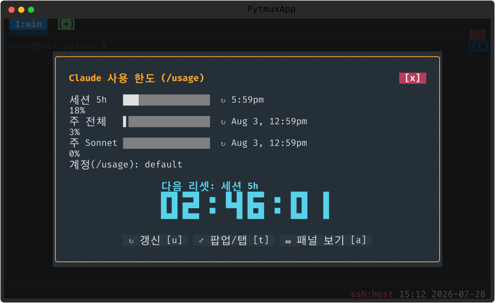

claude-token-usage-view
Claude 사용 한도(세션 5h·주간)를 막대로, 다음 리셋까지 남은 시간을 큰 블록 숫자로 보여주는 전용 화면입니다. 팝업 말고 탭/패널로도 띄울 수 있어 상시 모니터에 적합합니다.
여는 법
| 명령 | 설명 |
|---|---|
usage-view | 한도+카운트다운 화면 (usage-view [popup|tab|pane], 기본 popup; 별칭 token-viewer·usage-clock) |

메모
한도 값은 claude-code 플러그인의 실측(/usage) 데이터를 같이 씁니다. tab/pane 모드로 열면 자리 하나를 차지하는 대시보드가 됩니다.
끄기 · 제거
:plugins 관리 팝업에서 끄거나(가역), pytmuxlib/plugins/claude-token-usage-view/
디렉토리를 지우면(delete-to-disable) 명령·자동완성·메뉴 어디에도 나타나지 않고 조용히
사라집니다. 코어는 영향받지 않습니다. ← 플러그인 개요